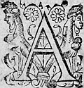
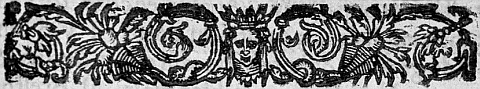
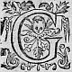

LE
CINQUIESME
LIVRE DE LA
SECONDE PARTIE
D'ASTREE.
Édition de 1610, p. 271.
Édition de Vaganay, p. 173.

A
ASTREEeusteut bien pris plaisir au discoursη de Hylas, si c'eust esté en une autre saison : mais le desir extréme qu'elle avoit d'estre au lieu où Silvandre avoit trouvé la lettreη de Celadon luy faisoit souffrirsoufrir avec impatience tout ce qui l'en destournoit. Cela fut cause qu'à la premiere occasion qui se presenta, elle fit signe à Philis qu'il estoit temps de s'en aller, et que le sejour luy estoit ennuyeux, et voyant que sa compagne ne l'entendoit pas, lors qu'elle vit que Hylas s'arrestoit pour songer un peu à ce qu'il avoit à dire de Criseide, et monstroitmontroit d'en vouloir continuer le discours, elle le prevint, avec telles parolesparolles : - Je n'eusse jamais pensé que la beauté de Philis eusteut eu tant de puissance sur le plus libre
esprit qui fut jamais, que de le retenir en un discours plus d'une heure. Et puis que la rigueur de cette Bergere n'a point de consideration de la contrainte en quoy elle le retient, faisons-nous paroistre plus discrettes, et leur rompant compagnie, donnons-luy occasion de cesser. Aussi bien la grande chaleur qui nous a retenuës en ce lieu est desja abatuë, et le promenoir d'or en là sera plus agreable que le discours : Et à ce mot elle se leva, et le reste de la compagnie la suivit, et mesme Hylas prenant Philis sous les bras : - Je suis bien aise, dit-il, ma Maistresse, que les plus insensibles ressentent une partie de la peine que vous me donnez, et recognoissentreconnoissent l'amour que je vous porte. Il disoit ces parolesparolles pour Astrée qu'il tenoit pour personne qui n'eust jamais rien aymé. Et voila comme nostreη jugement est deceu bien souvent par l'apparence ! Et Philis le voulant laisser en cette opinion : - Ceux qui ayment bien, dit-elle, n'essayent pas de rendre preuve de leur affection par le rapportraport des personnes qui ne sçavent pas aymer, mais par leurs propres services. Et quant à la patience que vous avez euë de parler si longuement, n'en estes-vous pas surpayé par celle que j'ay euë de vous escouter ? - C'est, dict Hylas, une chose insupportable que l'arrogance et l'ingratitude des Bergeres de cette contrée ! Et par ce que Philis voulut suivre ses compagnes, il la prit sous les bras, et continuant, - Afin de ne m'estre point obligée : Vous ne voulez pas seulement nier ma patience, mais voulez encores que je vous sois redevable de ce que vous m'avez
escouté. Quelle Loy est celle-là ? - C'est celle que le seigneur, dit-elle, impose à son esclave. - Mais plustost, dit-il, le tiranTyran à son peuple. - Et comment, repliqua Philis, me tenez vous pour un tyran ? Il y a pour le moins cetteceste difference, que je n'use point de force ny de violence sur vous. - Pouvez-vous, respondit Hylas, dire ces paroles sans rougir ? Et pouvez-vous penser que, si ce n'estoit par force, Hylas demeurast si long-temps en vostre puissance ? - Et où sont mes liens, dit-elle, où sont mes fers et mes prisons ? - Ah ! ignorante ou trop dissimulée Bergere, vos chaisnes sont tellement indissolubles, que moy qui suis, s'il faut le dire ainsi, la mesme franchise et liberté n'ay pas seulement le vouloir de m'en delivrer. Or jugez si vos nœuds estreignent bien fort, puis que Hylas en est si fort attaché : Hylas, dis-je, que cent beautez et unies et separées, n'ont jamais peu arrester. Cependant Paris ayant repris Diane sous les bras, Silvandre pour sa discretion demeura sans party quelque temps : car il voulut bien forcer son affection, et ceder sa place à Paris, pour rendre ce devoir à sa Bergere, qui le remarquant luy en sceut gré, dautantd'autant que toutes ces honnestes Bergeres estoient bien aisesayses de rendre toute sorte de devoir au gentil Paris, qui à leur consideration quittoit la grandeur où sa condition l'avoit eslevé. Et de fortune Madonte estant seule, parce que Thersandre s'estoit amusé avec Laonice, Silvandre la prit sous les bras, et s'advançant devant la trouppe, resolut de continuer le voyage avec elle. Et quoy que ce Berger s'yη
fustfut au commencement addressé pour ne sçavoir où trouver
mieux, si est-ce qu'apres il en fut fort satisfaictsatisfait :
car cetteceste Bergere estoit belle et discretediscrette, et avoit
des traitstraicts de visage, et des façons qui ressembloient
fort à celles de Diane, non pas qu'elle fustfut
si belle, nyn'y qu'estant ensemble cette conformité se
peustpeut bien remarquer, mais estant separées, elles
avoient quelque chose l'une de l'autre.
Or Silvandre marchoit de cetteceste sorte, et ne pouvant
estre aupres de Diane, estoit bien aise de voir en Madonte quelque chose qui en eust des marques, mais
plus encores, lors qu'entrant en discours, il
remarqua quelques accents et quelques responces qui
la luy representoient encor plus vivement. Cela fut
cause que depuis ce jour il seη
pleut davantage en
sa compagnie, mais il payaη
peu de temps apres bien
cherement ce plaisir. Tircis entretenoit Astree :
Paris, Diane : Hylas, Philis : de sorte que
Thersandre fut contraintcontrainctη
η
, voyant sa place prise par Silvandre, de s'arrester avec Laonice. Elle qui
avoit tousjours l'œil sur Philis et sur Silvandre, remarqua assez aisément que le Berger ne se
desplaisoit point avec Madonte : et afin d'en
sçavoir davantaged'avantage , elle pria Thersandre de
s'approcher d'eux, ce que la jalousie qu'il en
concevoit desja luy fit faire aisémentaysement , mais ils ne
peurent ouyr que des propos assez communs.
Ils ne marcherent pas un demy quart d'heure le long
de quelques prez, que Silvandre leur monstra du
doigt le bois où il les vouloit conduire, et peu apres
ayant passé quelques hayes,
ils entrerent dans un taillis espais : et par ce que le sentier estoit fort estroictestroit , ils furent contraints de se mettre à la file, et continuerent de cetteceste sorte plus d'un traicttrait d'arc. En fin Silvandre, qui comme conducteur marchoit le premier, fut tout estonné qu'il rencontra des arbres pliez les uns sur les autres en façon de tonne, qui luy couppoientcoupoient le chemin. Toute la trouppe passant à travers les petits arbres, s'approcha pour sçavoir ce qui l'arrestoit, et voyant qu'il n'y avoit plus de chemin : - Et quoy, Silvandre (dit Philis) est-ce ainsi que vous conduisez celles qui vous prennent pour guide ? - J'advoüeavoüe, dit le Berger, que j'ay laissé le chemin par où j'ay passé ce matin, mais c'est qu'il m'a semblé que cestuy-cy estoit le plus court et le plus beau. - Il n'est point mauvais, adjousta Hylas, si vous nous voulez conduire à la chasse : car je croy bien que voicy le plus fort du bois. Silvandre qui estoit fasché d'avoir perdu le chemin, fitfist tout le tour de cestecette tonne avec quelque peu de difficulté : et estant parvenu à l'autre costé, il fut plus estonné qu'auparavant, parce que ces arbres qui estoient ainsi pliez les uns sur les autres, faisoient une forme ronde qui sembloit un Temple, et qui toutesfois n'estoit que l'entrée d'un autre plus spacieux, dans lequel on entroit par celuy-cy. A l'entréeη il y avoit quelques vers que Silvandre s'amusa à lire, dont toute la trouppe qui l'attendoit, se sentant ennuyée, l'appella plusieurs fois. Luy tout estonné, apres leur avoir respondu, s'en retourna vers eux, sans entrer dans le temple, afin de les y conduire, et tendant la
main à Diane :
- Ma Maistresse, luy dit-il, ne plaignez point la
peine que vous avez prise de venir jusques icy ; car
encor que vous vous soyez un peu destournée,
toutesfois vous verrez une merveille de ces bois : Et lors la prenant d'une main, et de l'autre pliant
les branches des arbres le plus qu'il pouvoit pour
luy faire passage, il la conduisit au devant de
l'entrée. Les autres Bergers et Bergeres suivirent
à la file, desireux de voir cette rareté dont
Silvandre avoit parlé.
Au devant de l'entree, il y avoit un petit pré de la
largeur de trente pastrente pas ou environ, qui estoit tout
environné de bois de trois costez, de sorte
qu'il ne pouvoit estre apperceu que l'on n'y fustfut .
Une belle fontaine qui prenoit sa source tout contre
la porte du Temple
ou plustost cabinet, serpentoit
par l'un des costez, et l'abbreuvoit si bien, que
l'herbe fraische, et espaisse, rendoit ce lieu
tres-agreable. De tout temps ce boccage avoit esté
sacré au grand Hesus, Teutates et Taramis. Aussi
n'y avoit-il Berger qui eust la hardiesse de conduire
son trouppeau, ny dans le boccage, ny dans le preau :
et cela estoit cause que personne n'y frequentoit
gueresguiere , de peur d'interrompre la solitude et le sacré
silence des Nymphes
η
, Pans et Egipans : l'herbe qui
n'estoit point foulée, le bois qui n'avoit jamais
senty le fer, et qui n'estoit froissé ny rompu par
nulle sorte de bestail, et la fontaine que le pied ny
la langue alterée de nul troupeau n'euteust osé toucher,
et ce petit taillis agencé en façon de tonne, ou
plustost de temple, faisoient bien paroistre
que ce lieu estoit dedié à quelque Divinité. Cela fut cause que tous ces Bergers s'approchantapprochans avec respect de l'entrée, avant que de passer outre y leurent des vers, qui escris sur une petite table de bois estoient attachez au milieu d'un feston, qui faisoit le tour de la voute de la porte. Les vers estoient tels.
Loinη
, bien loin, profanes esprits :
Qui n'est d'un sainct Amour espris,
En ce lieu sainct ne fasse entrée :
Voicy le bois où chasque jour,
Un cœur qui ne vit que d'Amour,
Adore la Deesse Astree.
Ces Bergers et Bergeres demeurerent estonnez de voir
cetteceste inscription, et se regardoient les uns les
autres, comme se voulant demander si quelqu'un de la
trouppe ne sçavoit point ce que c'estoit, et s'il
n'avoit point veu cecy autrefois. Diane en fin
s'addressantadressant à Silvandre : - Est-ce icy Berger, luy
dit-elle, où vous nous voulez conduire ? - Nullement,
respondit le Berger, et je ne vis de ma vie ce que
je vois.
η
- Il est aiséaysé à cognoistre, adjousta Paris,
que ces arbres ont esté pliez comme nous les
le voyons
depuis peu de temps : car les lévreslievres en sont encor
toutes fraischesfresches . Si faut-il que nous sçachions ce
que c'est : mais de peur d'offenseroffencer la Deité à qui
ce boccage est consacré, n'y entrons point qu'avec
respect, et apres nous estre rendus plus nets que nous
ne sommes pas.
Chacunη s'y accorda, sinon Hylas, qui respondit que quant à luy il n'y avoit que faire, et encor qu'il pensast de bien aymer, que toutesfois Silvandre luy avoit tant dit le contraire, qu'il ne sçavoit qu'en croire : - Et puis, disoit-il, qu'il est deffendu d'y entrer à ceux qui ne sont point espris d'un sainct Amour, je sçay bien que je suis espris d'Amour, mais qu'il soit sainct ou non, certes je n'en sçay rien. - Comment, dit Philis en sousriant, faute d'amour, ô mon serviteur, fera-t'il que vous nous faussiez compagnie ? - Quant à moy, respondit-il, j'en ay bien tres-grande quantité à ma façon, mais que sçay-je si elle est comme l'entend celuy qui a escrit ces vers ? J'ay tousjours ouy dire qu'il ne se faut point joüer avec les Dieux. - Or regarde Hylas, adjoustaadjouta Silvandre, quelle honte tu reçois de ton imparfaite amitié en ceste bonne compagnie. - Vrayement, respondit Hylas, tu as raison, tant s'en faut, si tu prenois mon action, comme elle doit estre prise, tu m'en loüerois. Car ne voulant point contrevenir au commandement de la divinité qui s'adoreη en ce boccage, je fais paroistre que je luy porte un grand respect, et que je la revere comme je dois, au lieu que toy mesprisant son ordonnance, t'en vas plein d'outrecuidance profaner ce sainct lieu, sçachant bien en ton ame, quoy que tu vueilles feindre, que tu n'as pas ce sainct Amour qui est requis. Silvandre alors le laissant : - Je te respondray, luy dit-il, bien tost : Et lors avec toute la trouppetroupe , apres avoir puisé de l'eau en sa main, et s'estre lavé, ils laissent tous leurs souliers, et les pieds nudsη ,
entrent sous la tonne : Et lors Silvandre se tournant
vers Hylas : - Escoute Hylas, luy dit-il, escoute
mes paroles, et en
sois tesmoin : Et puis relisant les vers qui estoient
à l'entree, il dit ayant les yeux contre le Ciel, et
les genoux en terre : - O grande Deitéη
! qui es adorée
en ce lieu, voicy j'entre en ton sainct Boccage, tres-asseuré que je ne contreviens point à ta volonté,
sçachant que mon Amour est si sainct et si pur que tu
auras agreable de recevoir les vœux, et supplications
d'une ame qui ayme si bien que la mienne. Et si la protestation que je fais n'est veritable, punis, ô
grande Deitéη
! mon parjure, et mon outrecuidance.
Aη
ce mot les mains joinctesjointes et la teste nuë, il entra
dans la tonne, et tous les autres apres, horsmis Hylas. Le lieu estoit spatieux, de quinze ou seize pas en rond, et au milieu y avoit un grand chesne, sur
lequel s'appuyoit la voute que faisoient les petits
arbres, et mesmemesmes ses branches tirées contre bas en
couvroient une partie. Au pied de cetcest arbre estoient
relevésrelevez quelques gazons en forme d'autel sur lequel
y avoit un tableau où deux amours estoient peints, qui
essayoient de s'oster l'un à l'autre une branche
de Mirte et une de Palme, entortillées ensemble.
Soudain que cette devote trouppeceste devotte troupe fut entree, chacun se
jetta à genoux : et apres avoir adoré en particulier
la Deitéη
de ce lieu, Paris s'approchantaprochant de l'autel,
et faisant l'office de Druide, ayant cueilly quelques
fueilles de chesne : - Reçoy, dit-il, ô grande Deitéη
,
qui que tu sois adorée en ce lieu, l'humble
recognoissance de cetteceste
devote trouppetroupe , avec une aussi
bonne volonté, qu'avec humilité et devotion je t'offre,
au nom de tous, ces fueilles de l'arbre le plus aymé
du Ciel, et sous le tronc duquel il te plaist que l'on
t'honorethonore . Il dit, et offrant ces fueilles, les mit
avec un genoüil en terre sur l'autel. Alors chacunchascun se releva, et s'approchant de ces gazons pour voir
le tableau qui estoit dessus, ils s'
apperceurent deux Amours, commeη
j'ay dit, qui tenant à deux mains les
branches de Palme et de Myrtemyrthe entortillées,
s'efforçoient de se les oster l'un à l'autre.
Laη
peinture estoit fort bien faictefaite : car encor que ces
petitspetis enfans fussent gras et potelez, si ne laissoit-on de voir les muscles et les nerfs, qui à
cause de l'effort paroissoient eslevez : non toutesfois
en sorte que l'on ne recogneutrecognut bien que l'embon-pointenbompoint empeschoit qu'ils ne parussentpareussent davantage. Ils avoient
tous deux la jambe droicte advancéedroite avancee , et les pieds qui
se touchoient presque l'un l'autre. Les bras estoient
fort en avant, et au contraire les corps en arriere,
comme s'ils avoient appris que plus un poids est
esloigné, et plus il a de pesanteur, car chacun d'eux
pour donner plus de peine à son compagnon se tient
de cette sorte,
afin que le poids mesme de leurs petitspetis corps,
favorisastfavorisat d'autant la force de leursleur bras. Ils
avoient les visages beaux, mais presque comme bouffisboufis ,
à cause du sang qui leur montoit au front pour
l'effort qu'ils faisoient, ce que les veines grossies
aupres des temples, et au milieu du front
tesmoignoient assez : Et le peintre avoit esté si
soigneux, et y avoit travaillé
avec tant d'industrie, qu'encores qu'il les representastrepresentat en une action qui
faisoit paroistre que chacun vouloit vaincre, si est-ce qu'à leur visage on cognoissoitconnoissoit bien qu'il n'y
avoit point d'inimitié entre eux, ayant meslé parmy leur combat je neη
sçay quoy de doux et de riant aux
yeux, et en la bouche de tous les deux. Leurs
flambeaux estoient un peu à costé, où ils les avoient
laissé choir : et de fortune estant tombeztumbez l'un pres
de l'autre, les endroits qui estoient allumez,
s'estoient rencontrez ensemble ; de sorte qu'encores
que le reste des flambeaux fustfut separé, les flammesflames toutesfois des deux s'unissant ensemble n'en
faisoient qu'une, et par ce moyen ils esclairoient
ensemble, et avec d'autant plus d'ardeur et de clarté
que l'une adjoustoit à l'autre tout ce qu'elle en
avoit, avec ce mot, NOS VOLONTEZ DE MESME NE SONT QU'UNE. Leurs arcs estoient je neη
sçay comment si bien
entrelacezentrelassez l'un dans l'autre, qu'ils ne pouvoient
tirer que tous deux ensemble, et les carquois qu'ils
avoient sur leursles espaules, estoient bien pleins de
fleschesplains de fleches , mais à la couleur des plumes on cognoissoitconnoissoit bien que celles qui estoient en l'un appartenoient
à l'autre, par ce que dans le carquois doré, les
fleschesfleches estoient à plumes argentées, et dans l'argenté
les dorées.
Cette trouppe eust demeuré long-temps sans entendre cette peinture, si le Berger Silvandre
par la priere
de Paris ne la leur eusteut declarée. - Ces deux amours, dit-il, gentile
trouppetroupe ,
signifient l'Amant et
l'Aymé. CesteCette
palme et ce mirte entortillez,
signifient la victoire d'amour, d'autant que la palme
est la marque de la victoire, et le mirtemirthe de l'Amour.
DoncquesDonques l'Amant et l'Aymé s'efforcent à
qui sera
victorieux, c'est à dire à qui sera plus Amant.
Ces flambeaux dont lesflammesflames sont assemblees et qui
pour ce sujetsubjet sont plus grandes, montrent que l'amour
reciproque augmente l'affection. Ces arcs entre-lassez
et liez de sorte ensemble, que l'on ne peut tirer l'un
sans l'autre, nous enseignent que toutes choses sont
tellement communes entre les amis, que la puissance
de l'un est celle de l'autre, voire que l'un ne peut
rien faire sans que son compagnon y contribuë autant
du sien : ce que le changement
des fleches nous apprend encorencores mieux. On peut encoresencore cognoistre, par cét assemblee d'arcs et de flammes,
et par cét eschange de fleches l'union desde deux
volontez en une, et comme disent les plus sçavantsη
, que
l'Amant et l'Aymé ne sont qu'un. De sorte qu'à
ce que
je puis voir, ce tableau ne vous veut representer que
les efforts de deux Amants pour emporter la victoire
l'un sur l'autre, non pas d'estre le mieux aymé, mais
le plus remply d'Amour, nous faisant entendre que la
perfection de l'Amour n'est pas d'estre ayméaimé , mais
d'estre Amant.
Que si cela est ma belle Maistresse,
dit-il, se tournant vers Diane, voyez combien vous
m'en devez de reste. - J'advouë
librement, dit-elle,
que de cestecette sorte j'ayme mieux estre en vos dettes
que si vous estiez aux miennes. Hylas estoit à l'entree, et n'osoit passer outre, quoy qu'il en
eusteut beaucoup d'envie, et plus encore lors que panchant dedans la moitié du corps, il vid
l'autel de gazons et le tableau qui estoit dessus : Et
parce qu'il ne le pouvoit bien voir, il prestoit
l'oreilleaureille fort attentive aux discours de Silvandre,
et en mesme temps il ouyt que le Berger respondit à
Diane : - Je voy bien, ma belle Maistresse, que vous ny
moy ne sommes point representez en ce tableau, puis qu'ils sont chacun amant et aymé, et que vous estes
bien aymee, mais non pas Amante, et moy Amant, et non pas aymé, et cela plus par mal-heur que par raison.
η
- Il nyn' y a, dit Diane, difference entre nous que des
parolesparolles : car j'appelle raison ce que vous venez de
nommer mal-heur : et toutesfois c'est la mesme
chose. - Si toute la difference, dit-il, estoit au
mot, je ne m'en soucierois gueresguiere , mais le mal est
qu'en effect ce que vous appellezappelez raison, et moy
mal-heur me remplit de toute sorte de desplaisirs,
et que son contraire me rendroit le plus heureux
Berger de l'Univers. A ce mot il se tourna vers le tableau, et parce que
Diane vouloit respondre : - Je vous supplie, dit-il,
ma belle Maistresse, de ne me donner davantage de
cognoissanceconnoissance de vostre peu de bonne volonté, et me
permettre de voir ce qui est encor de rare en ce tableau.
Et lors le prenant en la main il leut ces parolesparolles qui estoient escrites au bas.

VOYCI
VOICY
LES DOUZE
tablesη des loix d'Amour, que sur peine
d'encourir sa disgrace, il commande
à tout Amant
d'observer.
tablesη des loix d'Amour, que sur peine
d'encourir sa disgrace, il commande
à tout Amant
d'observer
Premiere Table.

QUi veut estre parfaictparfait Amant,
Il faut qu'il ayme infiniment :
L'extreme Amour seule en est digne,
Aussi la mediocrité,
De trahison est plustost signe,
Que non pas de fidelité.
Deuxiesme Table.
Qu'il n'ayme jamais qu'en un lieu,
Et que cest Amour soit un Dieu,
Qu'il adore pour toute choseη
:
Et n'ayant jamais qu'un objectobjet ,
Tous les bon-heurs qu'il se propose
Soient pour cestcet unique subjectsubjet .
Troisiesme Table.
Bornant en luy tous ses plaisirs,
Qu'il arreste tous ses desirs,
Au service de cestecette belle :
Voire qu'il cesse de s'aymer,
Sinon que
d'autant qu'aymé d'elle,
Il se doit pour elle estimer.
Quatriesme Table.
Que s'il a le soin d'estre mieux,
Ce ne soit que pour les beaux yeux,
Dont son Amour a pris naissance :
S'il souhaitte plus de bon-heur,
Ce ne soit que pour l'esperance,
Qu'elle en recevra plus d'honneur.
Cinquiesme Table.
Telle soit son affection,
Que mesme la possession,
De ce qu'il desire en son ame,
S'il doit l'acheterachetter au mespris
De son honneur ou de sa Dame,
Luy soit moins chere que ce pris.
Sixiesme Table.
Pourη
sujectsubjet qui se vienne offrir,
Qu'il ne puisse jamais souffrir,
La honte de la chose aimee :
Et si devant luy par desdain,
D'un mesdisant elle est blasmee :
Qu'il meure ou la venge soudain.
Septiesme Table.
Que son Amour fasse en effect,
Qu'il juge en elle tout parfaictparfait ,
Et quoy que sans doute il l'estime :
Au prix de ce qu'il aymera,
Qu'il condamne comme d'un crime,
Celuy qui moins l'estimera.
Huictiesme Table.
Qu'espris d'un Amour violant,
Il aille sans cesse bruslantbrulant ,
Et qu'il languisse, et qu'il souspire,
Entre la vie et le trespas,
Sans toutesfois qu'il puisse dire,
Ce qu'il veut, ou qu'il ne veut pas.
Neufiesme Table.
Mesprisant son propre sejour,
Son ame aille vivre d'Amour
Au sein de cellece
qu'il adore,
Et qu'en elle ainsyainsi transformé,
Tout ce qu'elle aymeaime et qu'elle honore,
Soit aussi de luy bien aymé.
Dixiesme Table.
Qu'il tienne les jours pour perdus
Qui loing d'elle sont despendus,
Toute peine soit embrassee,
Pour estre en ce lieu desiré,
Et qu'il y soit de la pensee,
Si le corps en est separé.
Unziesme Table.
Que la perte de la raison,
Que les liens et la prison,
Pour elle en son ame il cherisse ;
Et se plaise à s'y renfermer,
Sans attendre de son service,
Que le seul honneur de l'aymeraimer .
Douziesme Table.
Qu'il ne puisse jamais penser,
Que son Amour doive passer :
Qui d'autre sorte le conseille,
Soit pour ennemy reputé,
Car c'est deη
luy prester l'oreilleaureille ,
Crime de leze Majesté.
Hylas qui escoutoit ce que Silvandre lisoit : - Je ne croiscroy point, dit-il, Silvandre, qu'une seule des paroles que tu as proferees, soit escritte au tableau que tu tiens : mais les ayant composees il y a long temps selon ton
humeur melancoliquemelancholique, tu fains à cestecette heure de les lire pour leur donner plus d'authorité, et tromper plus aysément toute cestecette trouppe. - Cela seroit peut estre faisable, respondit Silvandre, s'il n'y avoit icy que moy qui sçeust lire, et si ces loix estoient contraires à la raison, ou aux anciens statusstatuts d'Amour. - Si ce que je te reproche n'estoit veritable, adjousta Hylas, tu m'apporterois icy ce que tu tiens en la main pour me le faire voir. - Si tu juges repliqua Silvandre, que ce sainctsaint lieu seroit profané par ton corps : à plus forte raison dois-je penser que ces saintes loix le seroient beaucoup plus, si par la lecture que tu en ferois, ton ame en avoit communication. Car ce n'est que pour l'imperfection qui est en elle, que tu advoüoisavoüois que ton corps est profane, et indigne d'entrer icy. Toute la trouppe se mist à rire, et quoy que l'inconstant voulust repliquer, si ne fut il point escouté, parce que Silvandre ayant remis le tableau sur les gazons, et baisé les deux coings de cestcet autel rustique chacun suivit Paris, qui trouvant une porte faite d'ozier, passa de ce lieu en un autre cabinet beaucoup plus ample. Il y avoit au dessus de la voute de la porte un feston où pendoit un tableau. dans lequel ces vers estoient escrits.
Le temple d'amitiéη
Ouvre sans plus l'entree,
Du sainct Temple d'Astree :
Où l'Amour qui m'ordonne,
De la servir tousjours :
Comme jadis je luy donnay mes jours,
Veut qu'ores je luy donne,
Les triste nuictstristes nuits
De mes ennuis.
Astree fut celle qui s'y arresta le plus : fut qu'à cause de son nom, il luy semblastsemblat qu'elle y eust le plus d'interest, ou qu'oyant parler de la vie, et des ennuis elle pensast que cela se deust entendre de la fortune du pauvre et infortuné Celadon. Tant y a qu'elle considera longuement ceste escriture, et cependant le reste de la trouppe estant passé plus outre, et trouvant une voutte faittevoûte faite comme la premiere, mais beaucoup plus ample, d'abord tous se jetterent à genoüil, et ayant avec silence adoré la Deité à qui ce lieu estoit consacré, Paris, comme il avoit desja faictfait , offrit pour toute la trouppe un rameau
de chesne sur l'Autel. Il estoit de Gazons comme
l'autre, sinon qu'il estoit fait en triangle,
et du milieu sortoit un gros chesne, qui se poussant
un pied par dessus les Gazons avec un tronc seulement,
se separoit en trois branches d'une esgale grosseur : et se haussant de ceste sorte plus de quatre pieds : ces branches venoient d'elles-mesmes à se remettre
ensemble, et n'en faisoient plus qu'une qui s'eslevoit
plus haut qu'aucun arbre de tout ce Boccage sacré. Il
sembloit que la nature eust pris plaisir de se joüer
en cét arbre ayant d'un tyge tiré ces trois branches,
et puis si bien reünies (sans ayde de l'artifice)
qu'une mesme escorce les lioit, et les tenoit
ensemble. En la branche qui estoit à costé droit on
voyoit dans l'escorce, HESUS : et en celle qui estoit
à
costécôté gauche, BELENUS, et en celle du milieu, THARAMIS, au tyge d'où ces trois branches sortoient,
il y avoit TAUTATES, et en haut où elles se
reünissoient, il y avoit de mesme, TAUTATES.
Ces choses qui estoient selon la coustume de leur
religion (car ils adoroient Dieu sous les tyges des chesnes) ne les estonnerent point, mais si fit bien ce
qu'ils apperceurent à main gauche. C'estoit un autre
autel qui estoit aussi de Gazons, avec deux grands
vazes de terre dans lesquels estoient deux tyges de
myrtemirte . Au milieu l'on voyoit un tableau, par dessus
lequel les deux MyrtesMirtes pliant les branches, sembloient
luy faire une couronne et cela estoit bien recogneu
pour n'estre pas
naturel : mais entortillé de ceste
sorte par artifice. Le tableau representoit une
Bergere de sa hauteur et au plus haut du tableau il
y avoit, C'est la Deesse Astree, et au bas on
voyoit ce vers.
Plus digne de nos vœux que nos vœux ne sont d'elle.
Si tost que Diane jetta les yeux dessus, elle se
tourna vers Philis : - N'avez-vous jamais veu (luy
dit-elle) mon serviteur, personne à qui ce pourtrait
pourtraict ressemble ? Philis le considerant davantaged'avantage :
- Voila, luy respondit-elle, le pourtrait
pourtraict d'Astree, Je
n'en vis jamais un mieux fait, ny qui luy ressemblast
davantaged'avantage : mais, continua-t'elle, vous sembloit-il
qu'on neη
l'ait pas voulu rendre recognoissable ?
n'a-t'elle pas en la main la mesme houlette qu'elle
porte : Et lors prenant celle qu'Astree tenoit :
- Voyez ma Maistresse, ces doubles C. et ces doubles A.
entrelassez de mesme sorte tout à l'entour, et comme
l'endroit où elle la prend quand elle la porte est
garny de mesme façon, et les fers d'en bas de cuivre,
avec les mesmes chiffres : Et le siffletη
qui est en
haut,
representant la moitié d'un serpent, comme il se
tourne de mesmemesmes . - Vous avez raison, dit Diane,
mesme que je voyvois icy Melampe couché à ses pieds. Il
est bien recognoissable aux marques qu'il porte.
Voyez la moitié de la teste comme il l'a blanche, et
l'autre noire, et sur l'aureille noire la marque
blanche. Si l'autre aureille
n'estoit cachee, il y a apparence que nous y verrions la marque noire : car le peu qui s'en voit au haut de tala η teste, et au dessus paroist estre blanc. Voyez aussi cestecette marque blanche au tour du col en façon de colier, et l'eschancrure du poil noir qui se tournant en demy lune dessus les espaules, finit de mesme sur la crouppe où le blanc recommence. On n'y a pas mesme oublié ceste bande noire et blanche tout le long des jambes. Silvandre s'approchant d'elle : - Et moy, dit-il, j'y recognois entreη ce trouppeautroupeau la brebis qu'Astree ayme le plus. La voilavoyla toute blanche sinon les oreillesaureilles qu'elle àa noires, le nez, le tour des yeux, le bout de la queuë, et l'extremité des quatre jambes : et afin qu'elle ne fustfut pas mescogneuëmescognuë, regardez les nœuds que je luy ay veu porter plusieurs fois à l'entour des cornes en façon de Guirlande. Astree oyant tous ces discours, demeuroit estonnee et muette, sans faire autre chose que regarder avec admiration ce qu'elle voyoit. Toutesfois s'avançant près de l'Autel, et voyant plusieurs petits roulleaux de papiers espars dessus, elle en prit un, et le desliant toute tremblante, y trouva ces vers.
Privé de mon vray bien, ce bien faux me soulage,

PAssant si tu t'enquiers qui dedans ce Boccage,
M'a donné ce pourtraitpourtraict,
Sçache qu'Amour l'a fait,
Qui privé du vray bien, d'un bien faux me soulage.
Pressé de la douleur je luy tiens ce langage,
Banny de la moitiéη
,
Permettez par pitié,
Que privé du vray bien ce bien faux me soulage,
Confiné dans ce lieu que pour vous rendre hommage,
Je vous ay consacré
Aayez au moins à gré,
Que privé du vray bien ce bien faux me soulage.
S'il ne m'est pas permis de voir vostre visage :
Ces beaux traits pour le moins.
Serviront de tesmoing,
Que privé du vray bien ce bien faux me soulage.
Je leur dis, ô beaux traits que je retiens pour gage,
Que nul autre Amoureux
Ne fut onc plus heureux,
Privé de mon vray bien ce bien faux me soulage.
Je les adore donc, non pas comme une image,
Mais comme Dieux tres-grands.
Car par effecteffet j'apprends,
Que privé du vray bien ce bien faux me soulage.
Astree estant retiree à part, lisoit et consideroit ces vers, et plus elle regardoit l'escriture, et plus il luy sembloit que c'estoit de celle de Celadon : de sorte qu'apres un long combat en elle-mesme il luy fut impossible de retenir les larmes ; et pour les cacher elle fut contrainte de tourner le visage vers l'autre autel. Mais Philis qui estoit aussi estonnee, qu'aucune de la compagnie ayant pris un autre de ces rouleauxroulleaux , l'alla trouver se doutant bien que ce qui faisoit separer Astree de ceste sorte, n'estoit que ces peintures, et ces escrits, qu'elle mesme recognoissoit fort bien pour estre de ceux de Celadon. Et parce que Diane s'en alloit aussi la trouver, Philis luy fit signe de ne le faire, de peur que Silvandre et Paris ne la suivissent, ce qu'aysement elle entendit : et pource s'en retournant vers l'Image d'Astree, elle ouvrit quelques rouleauxroulleaux de ceux qui estoient sur l'autel : le premier qui luy tomba entre les mains, fut celuy-cy.
DIALOGUE.
SUR LES YEUX D'UN POURTRAIT.
STANCES.

SOnt ce, Peintre sçavant, des ames, ou des flammesflames ,
Qui naissant de ces yeux leur volent à l'entour ?
Ce sont flammesflames d'Amour qui consument les ames :
Ce sont ames plustost qui font vivre l'Amour.
Ah !Eh qui n'admirera ces flammesflames
nompareilles,
Si la vie et la mort procedent de cesses yeux,
Les effectseffets des grands Dieux sont-ce pas des
merveilles,
Et ces soleilsbeaux yeux
aussi ne sont-ce pas des Dieux ?
Les aymeraimer comme humains c'est donc erreur extreme,
Puis qu'il faut des grands Dieux reverer le pouvoir ;
Ne commandent-ils pas à ton cœur qu'il les ayme,
Ayant desja permis à tes yeux de les voir ?
Il est vray, mais mon cœur touché de reverence,
Doit de devotion non d'Amour s'allumer :
Les Dieux ne veulent rien outre nostre puissance.
Espreuve, si tu peux, les voir sans les aymer.
Cependant que Diane pour amuser toute la compagnie alloit lisant tout haut ces vers, et ceux-cy estantestans finis en prenoit d'autres, dont l'autel estoit presque couvert. Philis s'addressantadressant à la Bergere Astree : - Mon Dieu ma sœur, luy dit-elle, que je demeure estonnee des
choses que je voy en ce lieu ! - Et moy, dit-elle, j'en suis tant hors de moy que je ne sçay si je dors ou si je veille : et voyez ceste lettre ; et puis me dittedites je vous supplie, si vous n'en avez jamais veu de semblables. - C'est respondit Philis, de l'escriture de Celadon, ou je ne suis pas Philis. - Il n'y a point de doute, repliqua Astree, et mesmemesmes je me ressouviens qu'il avoit escrit ce dernier vers.
Privé de mon vray bien, ce bien faux me soulage
autour d'un petit pourtrait
pourtraict qu'il avoit de moy, et
qu'il portoit au col dans une
petite boiteη
de cuir
parfumé. - Voyons, dit Philis, ce qu'il y a dans
ce papier
que je tiens en la main, et que j'ay pris au
pied de vostre image.

Q
Ui ne l'admireroit ! Et qui n'aymeroit
aimeroit
mieux,
Errer en l'adorant plein d'Amour et de crainte :
Et rendre courroucez contre soy tous les Dieux,
Que n'idolatrer point une si belle Saincte
Errer en l'adorant plein d'Amour et de crainte :
Et rendre courroucez contre soy tous les Dieux,
Que n'idolatrer point une si belle Saincte
Sainte
?
Mais qu'est-ce que je dis ? en effecteffet elle est peinte,
La belle que voicy, ce ne sont pas des yeux,
Comme nous les croyons, ce n'en est qu'une fainte,
Dont nous deçoit la main du peintre ingenieux.
Ce ne sont pas des yeux ? si ressens-je la playe,
Quoy que le trait soit feintfaint, toutesfois estre vraye,
Fuyons donc puisqu'ainsi les coups nous en sentons.
Mais qu'est-ce que je dis ? en effecteffet elle est peinte,
La belle que voicy, ce ne sont pas des yeux,
Comme nous les croyons, ce n'en est qu'une fainte,
Dont nous deçoit la main du peintre ingenieux.
Ce ne sont pas des yeux ? si ressens-je la playe,
Quoy que le trait soit feintfaint, toutesfois estre vraye,
Fuyons donc puisqu'ainsi les coups nous en sentons.
Mais pourquoy fuironsfuyrons -nous ? la fuite en est bien
vaine,
Si desja bien avant dans le cœur nous portons,
De ces yeux vraisvrays ou faux la blessure certaine.
Ah ! ma sœur, dit alors Astrée, n'en doutons plus,
c'est bien Celadon qui a escrit ces vers, c'est bien
luy sans doute, car il y a plus de trois ansη
qu'il les
fit sur un pourtraict que mon pere avoit faictfait faire
de moy : pour le donner à mon oncle Focion.
A ce mot les larmes luy revindrent aux yeux, mais
Philis qui craignoit que ces autres Bergers et
Bergeres ne s'en apperceussentaperceussent : - Ma sœur, luy dit-elle,
voicy un sujetsubjet de resjouïssanceresjouyssance , et non pas de
tristesse. Car si Celadon a escrit cecy, comme je
le crois, il est certain qu'il n'est point mort,
quand vous avez pensé qu'il se soit noyé. Que si
cela est, quel plus grand subjet de joye
pourrions-nous recevoir ? - Ah ! ma sœur, luy
dit-elle, tournant la teste de l'autre costé, et laη
poussant un peu de la main, ah ! ma sœur, je vous
supplie ne me tenez point ce langage.
η
Celadon est
veritablement mort par mon imprudence, et je suis
trop mal-heureuse pour ne l'avoir pas perduη
. Et je
voy bien maintenant que les Dieux ne sont pas encor
contentscontens des larmes que j'ay versées pour luy, puis qu'ils m'ont conduitte icy pour m'enn'en
donner un
nouveau subject. Mais puis qu'ils le veulent, je
verseray tant de pleurs, que si je ne puis en laver
entierement mon offence, je m'efforceray pour le
moins de le faire, et ne cesseray que je ne perdeperdre
ou
la vie, ou les yeux. - Je ne vous diray pas, repliqua
Philis, que Celadon vive : mais si ferayη bien que s'il a escrit ce que nous lisons, il faut que de necessité il ne soit pas mort. - Et quoy, dit-elle, ma sœur, n'avez-vous jamais ouy dire à nos Druides, que nous avons une ame qui ne meurt pas encor que nostre corps meure ? - Je l'ay bien ouy dire, respondit Philis ; - Et n'avez-vous pas bonne memoire de ce qu'ils nous ont si souvent enseigné, qu'il faut donner des sepulturesη aux morts, voire mesmesmesme leur mettre quelque piece d'argent dans la bouche, afinà fin qu'ils puissent payer celuy qui les passeη dans le Royaume de Dis ? Qu'autrement ceux qui sont privez de sepulture demeurent cent ans errants le long des lieux où ils ont perdu leurs corps ? Et ne sçavez-vous pas que celuy de Celadon n'ayant peu estre trouvé, est demeuré sans ce dernier office de pitié ? Que si cela est, pourquoy seroit-il impossible qu'il allastalla errant le long de ce malheureux rivage de Lignon, et que conservant l'amitié qu'ilqui m'a tousjours portée, il eust encore pour son intention les mesmes pensées qu'autrefois il a euës ? Ah ma sœur, ma sœur, Celadon est trop veritablement mort pour mon contentement, et ce que nous en voyons, n'est que le tesmoignage de son amitié, et de mon imprudence. - Ce que j'en dis, respondit Philis, n'est que pour l'apparence que j'y vois, et le desir que j'en ay pour vostre repos. - Je le cognois bien, repliqua Astrée, mais ma sœur, ressouvenez-vous que si j'avois creu que Celadon fust en vie, et qu'en fin je trouvasse qu'il fustfut mort, il n'y auroit rien qui me peustpeut conserver la vie : car ce
seroit le perdre une
seconde fois ; et les Dieux et mon cœur sçavent
combien la premiere m'ama conduitte pres du tombeau.
- Encor vous doit-ce estre du contentement,
respondit Philis, de cognoistre que la mort n'a
peu effacer l'affection qu'il vous portoit. - C'est,
dit-elle, pour sa gloireη
, et pour ma punition. - Mais
plustost, dit Philis, qu'estant mort il a veu
clairement et sans nuage la pure et sincere amitié
que vous luy portez, et que mesme cette jalousie qui
estoit cause de vostre courroux, ne procedoit que d'une
Amour tres-grande. Car j'ay ouy dire que comme nos
yeux voyent nos corps, de mesmes nos ames separées
se voyent et recognoissent. Astrée respondit : - Ce
seroit bien la plus grande satisfaction que je peussepuisse recevoir : car je ne doute nullement, qu'autant que
mon imprudence luy a donné de subjetsujet d'ennuy, autant
la veuë qu'il auroit de ma bonne volonté luy
donneroit du contentement. Car si je ne l'ay plus
aymé que toutes les choses du monde, et si je ne
continuë encores en cestecette mesme affection, que jamais
les Dieux ne m'ayment.
Ces Bergeres parloient de cetteceste sorte, cependant que
Diane entretenoit le reste de la trouppe, lisant
quelquesfoisquelquefois les petits rouleaux qu'elles trouvoient
sur l'Autel, d'autresfois demandant à Paris, Tircis,
et Silvandre ce qu'ils jugeoient de ces choses. - Il
n'y a personne icy, dit Paris, qui ne cognoisse bien
que ce pourtraictpourtrait a esté faictfait pour Astrée, et qui
de mesme ne juge qu'il a esté mis en ce lieu par
quelqu'un qui ne l'aymeaime pas seulement, mais qui
l'adore. - Quant
à moy, dit Silvandre, ces chiffres me feroient croire que ce seroit Celadon, si Celadon n'estoit point mort. - Comment, dit Tircis, Celadon, ce Berger qui se noya, il y a quatreη
ou cinq lunes dans Lignon ? - Celuy-là mesme, respondit
Silvandre. - Et servoit-il Astrée ? adjousta Tircis. Au contraire j'ay ouy dire qu'il y avoit
tant d'inimitié entre leurs familles.
η
- La beauté
de la Bergere fut plus grande que la haine, respondit
Silvandre, et me semble que puis qu'il est mort, il
n'y a point de danger de le dire. - Je croy,
interrompit Diane, qu'aussi n'y en auroit-il pas encor qu'il vesquit, ayant esté si discret, et Astrée si sage, que cette affection ne sçauroit avoir
offenséoffencé personne. Astrée qui s'estoit teuë quelque temps, oyant ce que
les Bergers disoient d'elle, encore que ses yeux ne
fussent pas encor bien remis, ne peut s'empescher
de leur respondre : - Ces larmes que je ne puis
cacher, rendrontrendent tesmoignage que Celadon m'a aymée,
puis que sa memoire me les arrache par force : mais
ces escrits qui sont sur cesses
gazons, tesmoignent aussi
qu'Astrée a plustost fait faute contre l'Amour que
contre le devoir. Cela est cause que je ne fais point
de difficulté de l'advoüer pour luy rendre au moins
cette satisfaction apres sa mort, que mon honnesteté
n'a jamais permis qu'il eust receuë durant sa vie.
A ces parolesparolles toute la trouppe s'approcha d'elle,
et Diane luy montrant les billets qu'elle avoit :
- Est-ce làla de l'escriture de Celadon ? - C'en est
sans doute, respondit Astrée. - C'est donc signe,
adjoustaadjouta
Diane, qu'il n'est pas mort. A quoy Philis
respondit : - C'est de quoy nous parlions à cette heure-mesme : mais elle dit que l'Ame de Celadon qui va
errant le long du rivage de Lignon les a escrits.
- Et quoy ? adjoustadit
Tircis, n'a-t'il point esté enterré ?
- C'est la cause, dit Astree, qu'il va errant de
cette sorte : car on ne luy a pas mesme faict un vain Tombeau. - C'est veritablement, repliqua Paris
adjouta Philis
η
,
trop de nonchalance, d'avoir laissé si longuement
en peine pour un devoir de si peu de moment, une si
belle ame que celle de ce gentil Berger. - Voila, dit Tircis, comme le soucy des morts touche le plus
souvent fort peu ceux qui survivent : de sorte que
j'estime ceux-là sages, qui durant leur vie y
pourvoient. - Et sans mentir, adjoustaadjouta
Diane, c'est
chose estrange, que ce Berger tant aymé, non seulement
de tous ses parens, mais de tout nostre hameau, n'ait
receu ce pitoyable office que reçoivent les moins
aymez. - C'est peut-estre, dit Thersandre,
que les
Dieux l'ont ordonné de cette sorte, afin qu'il
n'abandonnast pas si tost ces lieux qu'il avoit tant
aymez, et que recompensé de son affection, il eusteut ce contentementη
de demeurer quelque temps pres de celle
qu'il ayme.
η
- ToutesfoisToutefois , dit Tircis, j'ay apprisapris que tout ainsi
que nostre corps ne peut demeurer en l'air, en l'eau,
ny dans le feu sans une continuelle peine, parce
qu'estant pesant, il faut qu'incessamment il se
travaille, tant qu'il est en ces elemens qui n'ont
rien de si solide : de mesme l'ame despoüillée du corps
n'estant point en son propre element tant qu'elle
demeure entre nous, est en une continuelle peine,
jusques à ce qu'elle soit
entrée aux champs Elisiens,
où elle trouve un autre air, une autre terre, une
autre eau, et un autre feu, d'autant plus parfaictsparfaits et
convenables à sa nature, que ceux où nous sommes le
sont davantaged'avantage à nos corps lourds et grossiers. Ce
que je sçay : parce que quand ma chere et tant aymée
Cleon fut morte, je fus presque en resolutionη
de ne
luy donner point de sepulture afin de retenir cette
belle ame quelque temps aupresauprez de moy : mais nos
Druides me sortirent de cestecette erreur, me faisant
entendre ce que je viens de vous dire.
- Quant à moy, dit Silvandre, puis qu'à faute de
sepulture on demeure quelque temps autour du lieu
où l'on meurt, je veux prier tous mes amis, que si je
meurs en cette contrée, ils ne m'enterrent point, afin
que j'aye plus de loisir de voir ma belle Maistresse.
Car il n'y a contentement des champs Elisiens qui
vaille celuy-là, ny peine qu'une ame puisse souffrir
pour n'estre en son element, qui ne soit beaucoup
moindre que le bien de la voir.
η
- Cela seroit fort
bon, respondit Tircis, si apres la mort vous
despoüillant du corps vous ne laissiez point aussi
tous ces amours : mais j'ay ouy dire à nos sages,
que nos passions n'estoient que des tributs de
l'humanité, et que les Dieux nous avoient naturellement
donné cet instinct, afin que la race des hommes ne
vint à deffaillir, mais qu'apres la mort, dautantd'autant que les ames sont immortelles, et que rien d'immortel
ne peut engendrer, cest Amour se perdη
en elles, tout
ainsi que la volonté de manger, de boire et de
dormir. - Et toutesfois, dit Silvandre, si Celadon a
[ 303 ] 1610
escrit ce que nous lisons, il n'y a pas apparence
qu'il ait perdu l'affection qu'il portoit à cette
Bergere. - Et qui sçait,
respondit Tircis, si les Dieux qui sont justes ne luy
ont point voulu donner cette particuliere satisfaction
pour recompense de la vertueuse et sainctesainte amitié qu'il
a portée à cette Bergere ? - Si cela est, repliqua
Silvandre, pourquoy ne dois-je espererη
de trouver
les Dieux aussi justes et favorables que luy, puis que
mon amitié ne cede ny à la sienne, ny à nulle autre,
soit en ardeur, soit en vertu ? - Mais, dit Astrée,
si les Dieux luy ont faictfait cette grace que vous ditesdittes ,
ne seroit-ce point impieté en luy rendant le devoir
de la sepulture de le faire partir de cette contree,
et luy ravir cele contentement ? - Nullement, respondit
Tircis ; car la grace que les Dieux luy ont faictefaite en
cela n'a esté que pour soulager la peine que
continuellement il reçoit, estant contraint de
demeurer sous un Ciel si contraire à son naturel.
Ces Bergers discouroient de cette sorte, quand
Philis considerant tout ce qui estoit en ce lieu,
jetta sa veuë sur un endroictendroit où il y avoit apparence
que quelqu'un se fust mis bien souvent à genoux : car
la terre en avoit les marques bien imprimées. EtSt parce que cela estoit vis à vis de l'Autel, et qu'elle
y vit un rouleau de parchemin attaché à une hart ou tortis de saule, elle s'y en allaη
pour voir ce que
c'estoit, et le desployant trouva ces parolesparolles .

GRande et toute puissante Deesse, encore que vos perfections ne puissent estre esgalées, il ne faut que nos sacrifices ne pouvant estre tels que vous meritez, laissent de vous estre agreablesagreable , puis que si les Dieux ne recevoient que ceux qui sont dignes d'eux, il faudroit qu'eux-mesmes fussentfissent la victime. Or ce que je viens offrir à vostre Deité, c'est un cœur et une volonté, qui n'ont jamais esté dediez qu'à vous seule. Si cetteceste offrande vous est agreable, tournez lesvos yeux pleins de pitié sur cette ame qui les a tousjours trouvez si pleins d'Amour, et par un acte digne de vous, sortez-là η de la peine où elle demeure continuellement, et la mettez enau repos duquel son malheur, et non son demerite l'a jusques icy esloignée. Je vous requiers cette grace par le nom de Celadon, de qui la memoire vous doit plaire, si celle du plus fidelle et affectionné de vos serviteurs, peut jamais avoir obtenu de vostre Divinité cette glorieuse satisfaction.
Philis faisant signe de la main, et appellant Astrée : - Venez lire, luy dit-elle, ma sœur ce que Celadon vous demande, et vous cognoistrezconnoistrez que Tircis vous a dit vraydict vrai : Et lors s'estant tous approchez, elle releut tout haut cette Oraison, qui ne fut pas sans qu'Astrée accompagnast ses parolesparolles de larmes, encores qu'elle se contraignistcontraignit le plus qu'il luy fustfut possible : mais elle ne pouvoit ressentir ces desplaisirs avec une moindre demonstration. Et lors que Philis euteust parachevé, - Vrayement, ditdict Astrée, je satisferay à sa juste demande : Et puis que ses parensparents ne luy rendent pas le devoir, à quoy la proximitéη les oblige, il recevra de moy celuy d'une bonne amie. A ce mot sortant de ce lieu, apres avoir honoré l'autel des Dieux, toute cette trouppe retourna vers Hylas, qui en les attendant n'avoit point esté oisif : car les voyant tous attentifs dans l'autre cabinet, il entra dans celuy où estoient les douze Tables des loix d'amour : Et quoy qu'il en redoutast l'entrée, si est-ce que mesprisant la force d'amour, luy semblant qu'il ne luy pouvoit faire pis, que luy faire perdre sa Maistresse, à quoy il sçavoit de tres-bons remedes, il entra à la desrobée dedans : et prenant le tableau qui estoit sur les gazons, voulut ressortir incontinent dehors, croyant que s'ilsil offençoit en y entrant, que moins il y demeureroit, moindre aussi seroit son offenseoffence . Et de fortune le prenant à la haste, et s'en retournant de mesme, il heurtahurta contre un des costez de l'entrée, de telle sorte que l'esbranlant, il fit tombertumber à ses pieds une escritoire que celuy qui avoit faictfait cet ouvrage tenoit làla expressément
pour escrire sesces conceptions, quand il y venoit faire ses prieres. Il leη ramasse comme envoyé de quelque Dieu, et se resolutresoult de corriger en ces loix, ce qu'il y trouveroit de contraire à son humeur. En cetteceste deliberation il les lit : et incontinent comme il avoit l'esprit prompt, les change de cetteceste sorte.
TABLES D'AMOUR
falsifiées par l'inconstant
Hylas.
Premiere Table.
QUi veut estre parfaictparfait Amant,
Qu'il n'ayme point infiniment :
Telle amitié n'en est pas digne,
Puis qu'au rebours l'extremité
De l'imprudence est plustost signe,
Que non pas de fidelité.
Deuxiesme Table.
Qu'il ayme et serve en divers lieux,
Et qu'il tourne tousjours les yeux,
Dessus quelque nouvelle chose,
Aymant ainsi divers objets,
Que les bon-heurs qu'il se propose,
Soient aussi pour divers sujets.
Troisiesme Table.
Ne bornant jamais ses desirs,
Qu'il cherche par tout des plaisirs,
Faisant tousjours amour nouvelle,
Voire qu'il cesse de l'aymer
Sinon que d'autant qu'aymé d'elle,
Pour luy seul il doit l'estimer.
Quatriesme Table.
Que s'il a du soin d'estre mieux,
Ce soit pour plaire à tous les yeux,
Des belles de sa cognoissance :
S'il souhaitte quelque bon-heur,
Ce ne soit que pour l'esperance,
D'estre plus absolu Seigneur.
Cinquiesme Table.
Telle soit son affection,
Que mesme la possession,
De ce qu'il desire en son ame,
S'il doit l'achepterattacher
au mespris
De son honneur ou de sa Dame,
Il la vueille bien à ce prix.
Sixiesme Table.
Pour sujetsubjet qui se vienne offrir,
Qu'il ne puisse jamais souffrir,
Querelle pour la chose aymee.
Que si devant luy par desdain,
D'un mesdisant elle est blasmée,
Qu'il y consente tout soudain.
Septiesme Table.
Que l'Amour permette en effaicteffait,
Que son jugement soit parfaictparfait ,
Et que dans son ame il l'estime,
Toute telle qu'elle sera,
Condamnant comme d'un grand crime ;
Celuy qui plus l'estimera.
Huictiesme Table.
Qu'espris d'un Amour assez lent,
Il n'aille sans cesse bruslant,
Ny qu'il languisse ou qu'il souspire,
Entre la vie et le trespas :
Mais que tousjours il puisse dire,
Ce qu'il veut, ou qu'il ne veut pas.
Neufiesme Table.
Estimant son propre sejour,
Son ame en soy vive d'Amour,
Et non en celle qu'il adore,
Sans qu'en elle estant transformé,
Tout ce qu'elle ayme et qu'elle honore,
Soit aussi de luy bien aymé.
Dixiesme Table.
Qu'il ne tienne pas pour perdus,
Les jours loing d'elle despendus,
Si la peine n'est surpassée
Par le bien qu'il s'est figuré,
Mais se contente en sa pensée,
Si le corps en est separé.
Unziesme Table.
Qu'il se remette à la raison,
Que ses liens et sa prison,
Pour elle bien-tost il finisse :
Mesprisant de s'y renfermer,
S'il n'attend rien de son service,
Que le vain honneur de l'aymer.
Douziesme Table.
Qu'il ne puisse jamais penser,
Que telle amour n'ait à passer :
Qui d'autre sorte le conseille,
Soit pour ennemy reputé,
Car c'est de luy prester l'oreille,
Crime de leze Majesté.
Hylas se hasta le plus qu'il luy fut possible de changer de ceste sorte ces douze Tables : et afin que ses rayeures fussent moins cogneuëscognuës , il leles η effaçoit avec la pointe d'un cousteau : et y ayant raclé un peu de son ongle les en couvroit, et puis le polissoit, fust avec l'ongle mesme, fust avec le dos du cousteau, et en fin escrivoit dessus ce qu'il y avoit changé : ce qu'il fit si promptementproprement η qu'il estoit mal-aisé de le recognoistre, et incontinent r'entrant dans le cabinet, mit le tableau en sa place, et ressortit avec la mesme diligence, sans estre apperceu de personne : ce qu'il fit un peu auparavant qu'Astrée et le reste de la trouppe revint ; de sorte qu'il fut trouvé assis à l'entrée, feignant de s'y estre endormy. Et parce qu'Astrée qui sortoit la premiere toute triste, ne printprit pas garde à luy, il ne fit point aussi semblant de se lever : mais quand Philis qui venoit apres l'apperceut en ceste posture : - Et qu'est-ce ? luy dit-elle, Hylas que vous faictesfaites icy, cependant que nous venons de voir les plus grandes merveilles qui soient en toute la rive de Lignon ? - J'ay une pensée (respondit Hylas se levant froidement, et se frottant les yeux) qui me tourmente plus que je ne me fusse jamais peu persuader. - Et qui est-elle ? (adjousta Philis) - Je la
vous diray, respondit l'inconstant, si vous me promettez de faire une chose dont je vous supplieray. - Je n'ay garde, dictdit -elle, de m'obliger de parole sans sçavoir ce que vous voulez. - Vous le pouvez faire, dict Silvandre en sousriant, en y adjoustant les conditions, contre lesquelles il n'y a pas apparence qu'un si gentil et parfaictparfait Amant vous voulustvoulut requerir de quelque chose, à sçavoir qu'il ne vous demandera rien qui contrevienne à l'honneur d'une sage Bergere. - Je le veux bien, dit Philis, a ceste occasioncondition η : - Et moy, respondit Hylas, je ne le veux qu'à cette condition. Sçachez donc, ma belle Maistresse, continua-t'il froidement, que je crois ce lieu estre à la verité un boccage sacré à quelque grande Divinité : car depuis que vous estes entrée dedans, et que Silvandre a leu les loix que j'ay ouyes, je me sens tellement touché d'une puissance interieure que je n'ay point de repos en moy-mesme, me semblant que jusques icy j'ay vescu en erreur, me conduisant contre les ordonnances que le Dieu qui est adoré en ce sainct lieu a faictesfaites à ceux qui veulent aymer. De sorte que je suis tout prest d'abjurer mon erreur, et me remettre au sentier qu'il m'ordonnera : et n'y a rien eu qui m'ait empesché de le faire cependant que vous estiez dans ce boccage, qu'une chose que je vous declareray. Vous sçavez, ma belle Maistresse, que depuis l'heure que vous et mon cœur avez eu agreable que Hylas se dit vostre serviteur, je n'ay point trouvé en toute cetteceste contrée un plus contrariant esprit, ny une humeur plus ennemie de
la mienne que Silvandre. Car il ne s'est jamais presenté occasion de prendre le party contraire au mien, que ce Berger ne l'ait fait, voire bien souvent il en a recherché les moyens avec artifice, comme en l'injuste sentenceη qu'il donna contre Laonice, parce que j'avois parlé pour elle, y ayant peu d'apparence qu'une morte fust preferee à ceste belle et honnesteη Bergere. De sorte que repassant ces choses en ma memoire, je suis entré en doute, que continuant ceste volonté de me contrarier, il ait peutpeu estre leu les ordonnances de ce Dieu d'autre façon qu'elles ne sont pas escrites dans le tableau qu'il tenoit. C'est pourquoy je vous veux conjurer, non seulement par la promesse que vous venez de me faire, mais par l'honneur que vous devez, soit à l'amour, soit à la Deité qui est adoree en ce boccage, que vous preniez la peine d'y rentrer, et de m'apporteraporter le tableau où ces loix sont escrites, afin que les lisant moy-mesme, je puisse sortir du doute où je suis, et apres suivre les ordonnances que j'y trouveray tout le reste de ma vie. Ceste requeste, Silvandre, (continua-t'il s'addressant à luy) est elle incivile, et contre l'honnesteté d'une sage Bergere ? - Nullement, respondit Silvandre, mais je crains qu'elle soit plustost inutile. - Or sus, dit Hylas, faisons une autre promesse entre nous : promettez moy devant cestecette trouppe, que tout le reste de vostre vie vous suivrez les commandemens que vous y trouverez escrits, et je vous feray un mesme serment. - Je ne feray, dit-il, jamais difficulté de vous promettre, ny à tout autre d'observer ce à quoy le devoir
m'oblige, y ayant long temps que je l'ay promis aux Dieux. - Vous me le promettez donc, repliqua Hylas. - Je le vous promets, dit Silvandre, et sans vous obliger à nulle promesse reciproque, vous aymant trop pour vous vouloir rendre parjure. - Et moy, respondit Hylas, je le vous veux jurer, et aux Dieux mesmes de ces lieux, les appellant tous à tesmoins, afin qu'ils punissent celuy de nous deux qui y contreviendra. - Je vous asseure, respondit Philis, que pour voir un si grand changement en Hylas, je veux bien luy faire voir ces douze tables : Et lors r'entrantrentrant dans le cabinet, apres avoir fait une profonde reverence, elle prit le tableau et l'apporta à l'inconstant, qui la teste nue, et mettant un genoüil en terre : - Je reçois, dit-il, ces sacrees ordonnances, comme venant d'un Dieu, et apporteesaportees par ma Deesse, protestant de nouveau, et jurant aux grands Dieux devant ce boccage sacré, et prenant ceste trouppe pour tesmoingtesmoin , que toute ma vie je les observeray aussi religieusement que si Hesus, Tautates, Taramis Dieuη me les avoient donnees visiblement. Et lors se relevant, sans remettre son chapeau, il baisa le bas du tableau, et estant environné de toute la trouppetroupe , il commença de les lire à haute voix. Mais quand Silvandre ouyt qu'il disoit qu'on ne devoit pas aymer infiniment. - Ah ! Berger, lisez bien, luy dit-il, vous trouverreztrouverez autre chose. - A la peine du livreη , dit froidement Hylas, et lors il monstramontra l'escriture à Philis, qui leut comme luy. - Cela ne peut estre, dit Silvandre, et lors s'approchant, il le voulut lire
sans se fier à personne, et Hylas serrant le tableau contre son estomac : - C'est un grand cas, dit-il, que celuy qui a accoustumé de tromper, àa tousjours opinion qu'on l'abuse. Je me doutois bien que vous lisiez autrement qu'il n'estoisestoit pas escrit, et si vous le voyez vous-mesme, l'advoüerez vous devant ceste troupecette trouppe ? - J'advoüeray sans doute, dit Silvandre la verité, mais permettez que je la lise. - Il suffit, dit Hylas, ce me semble que Philis l'ait, veuë, et vous devez bien vous en fier à elle. - Je le ferois, respondit Silvandre, si elle vouloit dire la verité, mais c'est par jeu ce qu'elle dit. - Je vous jure dit Philis, qu'il a leu comme il est escrit, et non au contraire. - Je ne sçaurois, dit-il, le croire si je ne le vois. - Or si vous n'avez assez de le voir, dit Hylas, touchez-le, et lisez-le vous mesme, pourveu que ce soit fidellement. Et lors Silvandre recevant le tableau, et jurant qu'il liroit sans rien changer, il en recommença la lecture. Mais quand il y trouva ce que Hylas avoit dit, il ne sçavoit qu'en penser, et plus encores lors que continuant il trouva les couplets tous changez. - Et bien, dit Hylas, que vous en semble, ma Maistresse ? Avois-je raison de douter de la preud'homieprud'hommie de Silvandre, puis qu'il lisoit tout le contraire de ce qui estoit escrit ? - Que dites-vous à cela Berger ? disoit-il, s'addressantadressant à Silvandre : serez-vous homme de paroleparolle ? Ou si vous vous desirez desdirez ? Le Berger ne respondoit mot, mais plus estonné de ceste advantureavanture que de chose qui luy fustfut jamais advenuë, il alloit considerant ce tableau, et lors Diane s'approchant de luy, et jettant la veuë dessus, demeura au commencement estonnee, et luy dit : - En
bonne foy Silvandre, advoüez la verité, la premiere fois que vous nous avez leu ces vers, estoient-ils escrits comme ils sont ? - Ma belle Maistresse, dit-il, quand je les ay leus ils estoient autres qu'ils ne sont. Et ne puis penser s'il estoit autrement, pourquoy je ne les eusse pas aussi bien veus qu' à cét heureà cette heure. Alors Diane prenant le tableau en la main, regarda l'escriture de plus pres : ce que Hylas appercevant et craignant que sa finesse ne fust recogneuë : - Or sus Silvandre, dit-il, il ne faut pas tant de discours : me voicy prest à tenir parole, et vous, serez-vous parjure ? - Vous me prenez de bien court, dit Silvandre, je ne suis pas sans un grand soupçon de tromperie : car je sçay fort bien que les loix que j'ay veuës estoient telles que je les ay dites, et maintenant je vois tout le contraire : de sorte que je suis fort en doute que cecy ne soit supposé. - Voila une tres-mauvaise excuse, dit l'inconstant, et comment pourroit-on avoir fait si promptement un autre tableau. Cependant qu'ils parloient ainsi, Diane qui consideroit l'escriture recogneut qu'encores que l'ancre fustfut semblable, toutesfois les traits des lettres ne l'estoient pas entierement, et les regardant encores de plus pres, et passant le doigt dessus et secoüant le parchemin, une partie des racleures de l'ongle s'en alla, et lors opposant l'escriture au Soleil, toutes les rayeures s'appareurents'apareurent aisémentaysement , dont s'estant asseuree : - Or sus, dit Diane, vous voicy tous deux hors de dispute, car en un mesme lieu vous trouvez ce que vous cherchez tous deux. Vous Silvandre, le lisant comme il estoit escrit, et vous
Hylas comme vous l'avez corrigé. Et lors s'approchant d'eux elle leur en monstra la preuve : parce que l'opposant au Soleil, on voyoit aysement les endroitsendrois ou le parchemin avoit esté gratté : et puis le considerant de plus presprez on remarquoit quelques uns des premiers traictstraits qui n'avoient peu estre assez bien effacez. Il n'y eut alors personne de la trouppe qui ne recogneustrecogneut ce qu'elle disoit, et se mettantmettans tout autour de Hylas, - Dites nous Berger, luy disoient-ils, comment vous avez peu faire ? Hylas se voyant convaincu par la prudence de Diane, fut en fin contrainctcontraint d'advoüeravoüer la verité, non pas toutesfois sans jurer plusieurs fois que ce n'avoit esté que l'injustice de ces loix, qui l'yluy avoient poussé : - Car disoit-il, elles sont bien tellement iniques, qu'il m'a esté impossible de les souffrir sans les corriger ainsi qu'elles doivent estre. Nul ne peut s'empescher de rireη oyant comme il en parloit : mais plus encores considerant l'estonnement que Silvandre avoit eu au commencement : Et parce qu'il se faisoit tard, et que le sejour en ce lieu avoit esté assez long, Philis voulut raporter le tableau où elle l'avoit pris, mais tous les Bergers furent d'advisavis que les vers fussent corrigez comme ils estoient auparavant, et que Hylas pour effacer en partie l'offence qu'il avoit faite d'entrer en ce lieu qui luy avoit esté deffendu, et d'avoir osé falsifier les ordonnances d'Amour, seroit condamné de rayer luy-mesme ce qu'il y avoit escrit, et de mettre à la marge ce qu'il avoit rayé, ce qu'il fit à l'heure mesme, plus disoit-il,
pour obeyrobeïr à sa maistresse que η pour appaiserapaiser Amour, le courroux duquel il ne redoutoit point sans elle, - Ny aussi adjouta adjoustaη Silvandre, gueresguiere avec elle. - Je ne vous contrediray jamais, respondit l'inconstant, tant que vous me blasmerez de trop de courage. - Prenez garde, respondit Silvandre, que ce ne soit de presomption et d'infidelité. Si ces dernieres paroles eussent esté ouyesouïes de Hylas, il n'y a point de doute qu'il eust respondueut répondu : mais estantétant entré dans le cabinet, elles demeurerent sans repartie, et cependant toute la trouppetroupe s'achemina par un petit sentier que Silvandre avoit choisi, et parce qu'Astree n'esperoit plus trouver des nouvelles de Celadon qui luy pussent plaire, elle estoit presque en volonté de s'en retourner, et pour ce sujectsujet laissant Tircis elle s'approcha de luyη : - Il me semble, luy dit-elle, Berger, qu'il est bien tard pour aller plus outre, et que nous ne sçaurions presque retourner en nos cabanes que la nuict ne nous surprenne. - Il est certain, dit le Berger, mais cela ne vous doit pas empescher de continuer vostre voyage, puis que vous en estes si pres : car aussi bien, encor que vous y voulussiez retourner, le jour ne vous accompagnera pas jusques à my-chemin. Quant à ce qui est de nos trouppeaux, ceux à qui nous les avons laissez en garde, les reconduiront bien pour ce soir en leurs loges. - Mais, dit Astree, comment coucherons-nous ? - Le lieu où je vous veux conduire, respondit Silvandre n'est pas loing du Temple de la bonne Deesse, et je m'asseure que la venerable Chrisante sera bien ayseaise de vous avoir ce soir pour hostesse.
- Il faut sçavoir, respondit la Bergere, si
mes compagnes l'auront agreable : Et lors les ayant
attendues en un lieu ou le chemin s'eslargissoit, elle
leur proposa ce que Silvandre avoit pensé. Il n'y
eut celle qui ne le trouvasttrouva fort à propos, puis qu'aussi bien il estoit impossible de regagnerregaigner de
jour leurs hameaux.
Enη
cestecette resolution doncques ils se remettent en
chemin : et Silvandre sans quitter Astree, estant
tousjours le premier et
ayant marché quelque peu, luy monstramontra le bois où il
avoit trouvé la lettre qui estoit cause de ce
voyage. - Voila, dit Astree, un lieu bien retiré pour
y recevoir des lettres. - Vous le jugerez bien
mieux tel, luy dit-il, quand vous y serez : car c'est
bien le lieu le plus sauvage, et le moins frequenté,
qui soit le long des rives de Lignon. - De sorte,
dit Astree, qu'aucun ne l'ala
sçeu escrire que vous,
ou l'Amour. - Pour ce qui est de moy, dit-il, je
sçay bien ce qui en est ; et quant à l'Amour je m'en
tais, car j'ay ouy dire que quelquesfoisquelquefois nous voulant
jetter ses flammesflames dans le cœur, il se brusleη
luy-mesme
sans y penser. Et qui sçait si cela ne luy est point
advenuavenu par la beauté de ma maistresse : Que si quelque
chose l'a garanty, c'est sans doute le bandeau
qu'il a devant les yeux. - Ah ! Silvandre, dit la
Bergere, ce bandeau ne l'empesche gueresguere de bien voir
ce qui luy plaist : et ses coups sont si justes, et
faillent si peu souvent le but où il les addresse
qu'il n'y a pas apparence qu'un aveugle les aytait tirez. - DiscretteDiscrete Bergere, respondit Silvandre, j'ay
veu un aveugle en la maison de vostre pereη , qui sçavoit aussi bien tous les chemins et destours de vostre hameau, et se conduisoit aussi bien par tout le logis que j'eusse sceu faire, ayant acquis cela par une longue accoustumance. Et pourquoy ne dirions nous qu'Amour qui est le premier, et le plus vieilη de tous les Dieux, n'ait par une longue coustume apris appris d'attaindre les hommes au cœur ? Et pour monstrer que c'est plus par coustume que par justesse, prenez garde qu'il ne nous vise qu'aux yeux, et qu'il ne nous attaint qu'au cœur. Que s'il n'estoit point aveugle, qu'elleη apparence y a-t'il qu'il blessast d'un reciproque Amour des personnes tant inesgales, ou qu'aux uns il donnast de l'Amour pour des personnes qui les surpassent de tant, et aux autres, pour d'autres qui leur sont tant inferieures ? J'en parle comme interessé : car à moy qui ne sçay seulement quequi η je suis, il a faict aymerfait aimer Diane de qui le merite surpasse tous ceux des Bergeres, et à Paris qui est fils du Prince de nos DruydesDruides, il fait aymeraimer une Bergere. - Par vos merites, respondit Astree, vous esgalezégalez les perfections de Diane, et Diane par ses vertus surpasse la grandeur de Paris, et par ainsi l'inegalité n'est point telle qu'il faille par là accuser Amour d'aveuglement. Silvandre demeura muet à cestecette replique, non pas qu'il n'eust aysement respondueut aisément répondu , mais parce qu'il fut marry d'avoir par ses paroles donné, cognoissance de sa veritable affection, et s'en repentoit, craignant d'offencer Diane si autre qu'elle le sçavoit. Mais il s'estoit de fortune bien
addresséadressé : car Astree luy eusteut volontiers donné toute sorte d'aide,
recognoissant la pure et sincere amitiéη
qu'il portoit
à Diane. Aussi le naturel d'une personne qui ayme
bien, est de ne nuire jamais aux amours d'autruy, si
elles ne sont prejudiciables aux siennes.
Et lors qu'il levoit la teste pour luy respondrerépondre , il
arriva dans le bois, qui fut cause que sans faire
semblant de ce qu'ils avoient dit, - Voicy, luy
dit il, sage Bergere, le bois que vous avez tant
desiré, mais il est si tard que le Soleil est desjadé-ja couché, de sorte que nous n'aurions pas beaucoup de
loisir de le visiter. - Si nous y trouvons, dit-elle,
des choses aussi rares que nous en avons trouvé en
celuy d'où nous venons, c'est sans doute que le temps
sera court, puis qu'à peine pourrions nous desjade-ja lire,
tant il est tard. Il est vray que ne devons pas
plaindre nostre journee, l'ayant trop bien employee,
ce me semble. Avec semblablesemblables
discours ils entrerent dans le bois,
et ne se donnerent garde que la nuict peu à peu leur
osta de sorte la clarté, qu'ils ne se voyoient
plus, et ne se suivoient qu'à la parole. Et lors
s'enfonçant davantage dans le bois, ilη
perdit
tellement toute cognoissance du chemin qu'il fut
contrainctcontraint d'advouëravouër qu'il ne sçavoit où il estoit.
Cela procedoit d'une herbe sur laquelle il avoit
marché, que ceux de la contree nomment l'herbe du
fourvoyement, parce qu'elle fait esgaleravouër
η
et perdre
le chemin depuis qu'on a mis le pied dessus, et selon
le bruictbruit commun il y en a quantité dans ce bois. Que
cela soit ou ne soit pas vray, jeη
m'en remets à ce
qui en est, tant y a que Silvandre suivy de cestecette honneste trouppe, ne peutpût de toute la nuictnuit retrouver le
chemin, quoy qu'avec mille tours et destoursdétours il
allast presque par tout le bois, et en fin il
s'enfonça tellement, que pour lese suivre ils estoient
contrainctscontraints de se tenir par les habillemens, la nuict
estantnuit étant si obscure qu'elle sembloit expressement estre
telle pour empescher qu'ils ne sortissent de ce bois.
η
Hylas qui de fortune s'estoit rencontré entre
Astree et Philis : - Je commence, dit-il, ma
Maistresse, à bien esperer du service que je vous
rends. - Et pourquoy dit-ildit
η
Philis. - Parce,
respondit-il, que vous n'eustes jamais tant de peur de
me perdre que vous avez, et qu'au lieu que je vous
soulois suivre, vous me suivez. - Vous avez raison,
dit-elle, et de tout ce bon changement, vous en
devez remercier Silvandre, que toutesfois vous dites
estre vostre plus grand ennemy. - Je ne sçay,
adjoustaadjoûta
Hylas, s'il
me faictfait souvent de semblables offices, si j'auray plus
d'occasion de le remercier de la faveur qu'il est
cause que je reçois de vous, que de luy reprocher la
peine que je prens. - Quant à cela, dit Philis, il
faut que vous en jugiez apres avoir mis le plaisir et
la peine que vous en recevez dans une juste balance.
- Je voudrois bien, ma Maistresse, ditdict
Hylas, que
seule vous tinssiez
cestecette balance, et que seule vous
fissiez jugement de la pesanteur de l'un et de
l'autre : car encoreencor que je n'y fusse point, je ne
laisserois pas de m'en rapoorter à
ce que vous en auriez jugé. Chacun se mit à rire de la bonne volonté de Hylas, et Silvandre qui l'oyoit, ne peutpût luy respondre autre chose sinon ; J'advouëavouë, Hylas, que je suis un aveugle, qui en conduis plusieurs autres : - Mais le mal est, dit Hylas, qu'ils ne sont aveugles que pour s'estre trop fiez en vos yeux. - Si vous n'eussiez point esté en la trouppe, adjoustaadjouta Silvandre, cét aveuglement ne nous fustfût point advenu. - Et pourquoy dit-il, vous ay-je peut-estre osté les yeux ? - Les yeux, non, respondit Silvandre, mais ouy bien le moyen de voir, nous ayant trop longuement entretenus par les longs discours de vos inconstances : et puis par les loix, que comme profane vous avez falsifiees, qui est en effecteffet ce qui nous a mis à la nuictnuit . - Vrayement Silvandre, respondit Hylas, tuη me fais ressouvenir de ceux qui apres avoir trouvé le vin trop bon, le blasment de ce qu'ils s'en sont enivrezenyvrez : Et mes amis, leur faut-il dire, pourquoy en beuviez-vous tant ? Et amy Silvandre, pourquoy m'escoutois-tu si longuement ? T'avois-je attaché par les aureillesη ? - J'avois bien en ce lieu, dit Silvandre, des chaisnes plus fortes que les tiennes : mais quoy que s'en soit, nous voicy tellement esgarez, soit pour la nuict, soit pour avoir marché sur l'herbe du fourvoyement, qu'il ne faut pas esperer de pouvoir demesler les plus petits sentiers qu'il ne soit jour, ou que pour le moins la Lune n'esclaire. - Et qu'est-il donc de faire ? dit Paris. - Il faut, continua Silvandre, se reposer soubssous quelques uns de ces arbres, attendant que la Lune se facefasse voir. Chacun
trouva ceste resolution bonne : aussi bien une partie de la nuictnuit estoit desja passee ; lors rencontransrencontrant un arbre un peu retiré des autres, ils choisirent le mieux qu'ils peurentpurent un lieu bien sec, et là les Bergers estendant leurs sayes, et les Bergeres s'estant couchees dessus, ils se retirerent un peu à costé, où tous ensemble ils se coucherent attendant que la Lune parustparût .